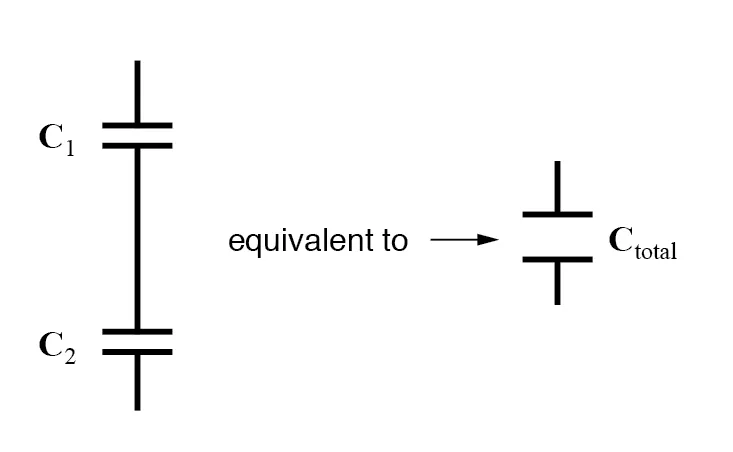
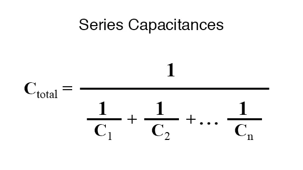
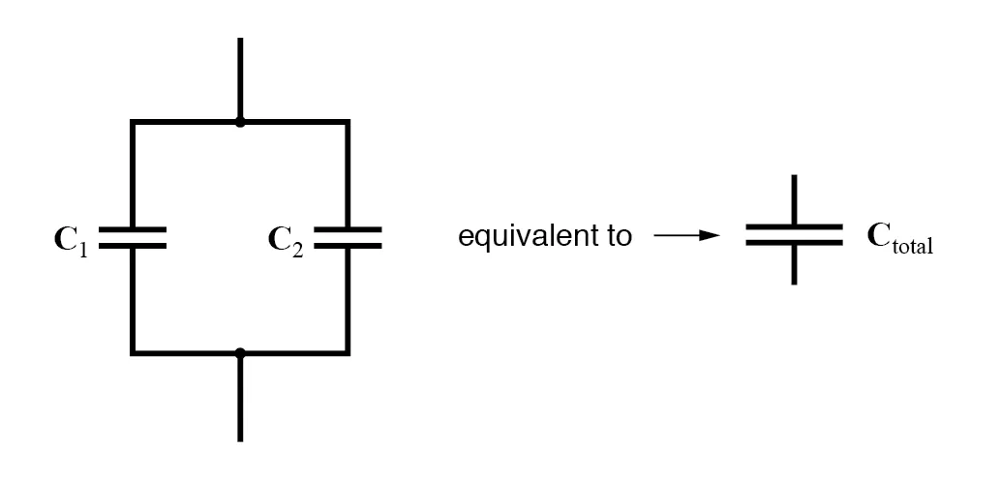
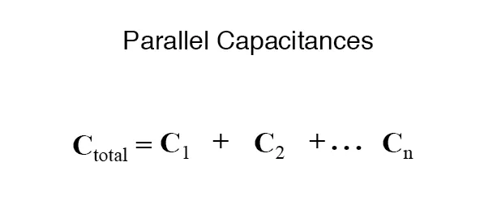

When capacitors are connected in series, the total capacitance is less than any one of the series capacitors’ individual capacitances. If two or more capacitors are connected in series, the overall effect is that of a single (equivalent) capacitor having the sum total of the plate spacings of the individual capacitors. As we’ve just seen, an increase in plate spacing, with all other factors unchanged, results in decreased capacitance.

Thus, the total capacitance is less than any one of the individual capacitors’ capacitances. The formula for calculating the series total capacitance is the same form as for calculating parallel resistances:

When capacitors are connected in parallel, the total capacitance is the sum of the individual capacitors’ capacitances. If two or more capacitors are connected in parallel, the overall effect is that of a single equivalent capacitor having the sum total of the plate areas of the individual capacitors. As we’ve just seen, an increase in plate area, with all other factors unchanged, results in increased capacitance.

Thus, the total capacitance is more than any one of the individual capacitors’ capacitances. The formula for calculating the parallel total capacitance is the same form as for calculating series resistances:

As you will no doubt notice, this is exactly the opposite of the phenomenon exhibited by resistors. With resistors, series connections result in additive values while parallel connections result in diminished values. With capacitors, its the reverse: parallel connections result in additive values while series connections result in diminished values.
REVIEW: